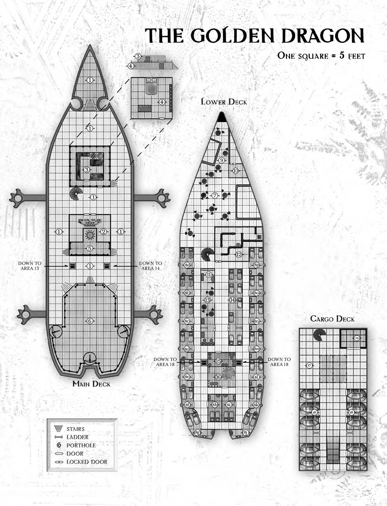

The Voyage of the Golden Dragon
Backstory
Some inventor has been working on a brand new technology - a flying ship! Unlike balloon-powered flight, this new ship, called the Golden Dragon, is powered by harnessing a collection of fire and air elementals to keeep the ship afloat. Unfortunately, the original idea for the elemental engine was not his, but his apprentace's. The apprentice had a rift with the inventor who the apprentice felt was taking credit for his idea. Now with the maiden flight coming up, the apprentice, who comes from a rich family, is planning to destroy the ship with the help of a mercenary troop.
The aprrentice's plan
The apprentice books passage on the maiden voyage under an assumed name. Because he left the inventor's employ early in the design phase, the aprrentice is not worried about being identified, especially becaue the inventor is not onboard the maiden flight for some reason the DM creates. He poses as a merchant transporting sme valuable goods in the hold. In reality the crates hold his mercenary force.
The apprentice's plot has these parts:
- A small group of mercenaries attack the ship with a young blue dragon. The mercernary party does not want to risk killing the blue dragon, and the ship has defenses, so this is primarily a distraction attack, though if the dragon can bring the ship down, great.
- While the crew defends the deck of the ship, the inventor goes into the hold ) and frees the mercenaries, which is just two others - a rogue and a bodyguard/brute/thug/tough of some kind.
- The apprentice and group head to area 12 - the engine room - where the rogue picks the lock to get them in. The engine is a large containment field powered by four crystals that keep the elementals in chek and direct their power to keeeping the ship afloat and moving.
- The apprentice disables the crystals and ship falls out of the sky.
- The apprentice and mercs use a magic item to teleport off the ship.
Scenes
- Hiring: The party meets the Inventor who hires them and explains why he will not be onboard. He tells the party that he is worried that the ship will be attacked by air elementals, who do not like that the ship is powered by one of their enslaved bretheren. They are asked to stand on deck and provide protection.
- Launch, meet crew and some passangers (need to be made up)
- Shortly after take off a passenger is fouund dead - killed with spell (flame bolt?). The players are asked to investigate - note that this investigation adds some roleplaying and investigation, but can be a time sync. You could cut this out to fit in time - maybe replace with a short seen where an air elemental attacks the ship - nerf the elementals hit points to make it a short fight and have the elemental mostly attack the ship, not the PCs - things like ripping down sails (used for steering) or damaging the exhaust of the engine room (which messes up the ability to stay afloat) - pcs have to both chase off the elemental WHILE keeping the ship from falling out of the sky by usng some skill to keep the ship intact. The can use the ballistas on deck
- Dragon attack - stormy weather appears around the ship and lightning is seen around. The captain fears an elemental attack and calls the party up to the deck to protect. Instead, a merc riding a young blue dragon shows up. Make this a 3 round battle, the dragon should start its turn under the ship, and on its turn it flies over the deck, using breath weapon or an attack (if too easy - have the dragon make a grapple attempt, then drop the unlucky sod off the side of the ship) and end up back under the ship. Chars have to prepare actions waiting for the dragon to show again. If dragon is below 25% health, or it has been 3 rounds, the ship lurches (the nose of ship dips down) and starts falling our of the air.
- Its a sabotage! - The captain (or someone else on deck tells the part there is a problem with the engine room, and tells them to head there. At this point start counting rounds so the party knows you are tracking how far the ship is falling. I would say they have one minute (10 rouunds) before the ship crashes. The party gets to engine room and it is blocked by inventor / mercs. They have to get past to get in.
- Fixing the engine - in the engine room, the crystals have been knocked out of their sockets. Replacing each one is a skill check and a full turn action. UNfortunately, the broken engine is now an uncotrolled portl to the elemental planes, and each round on initiative couunt 20, one or two elementals is generated (a fire or a fire and an air). Some notes:
- Let players be creative what skills they can use to fix the crystals, arcana, nature, artificers tools...
- When they get each crystal in, you can have the ships descent slow if needed
- skill checks used to fix a crystal goes at the end of intiative order (it is a delicate process that cannot be rushed) and if a character takes damage that turn their skill check is at disadvantage. The goal is to make some characters do skill cheks and some protect the fixers from the elementals
- Give each elemental a small number of hp - maybe 5-10. They are mini-elementals spun off from the broken containment field, not full blown elementals. The main threat is crashing.
- If the party knows that the apprentice has a teleport magic item, they can use to get off ship in a hurry if things go south - but don't let it work for more than a handful of people. If they dont stop the crash then people should die. The party could here the apprentice talking like "hurry up, jam the door shut and i will use the ring to get us off the boat!"
- You can have the ship spin or lurch at moments if the party is having too easy a time of it -then make them dex save or thrown against a wall and knocked prone taking 1 hp of dmg.
